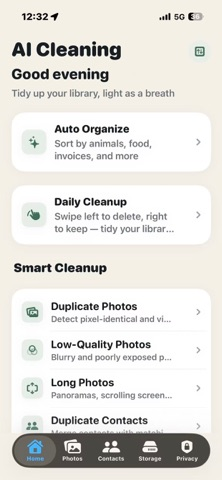

Official listing comparison - checked October 2, 2026
The best photo cleaner app for iPhone depends on your cleanup job.
Compare AI Cleaning, Cleanup, and Cleaner Kit for duplicate review, AI sorting, subscriptions, privacy labels, and deletion controls.

AI Cleaning listing preview · official App Store screenshot
Quick answer
There is no single winner for every cleanup job.
AI Cleaning is the focused choice for classifying a photo library into practical content categories before review. Cleanup and Cleaner Kit advertise broader toolboxes that also cover email cleanup and video compression. The better fit depends on whether you value a focused photo workflow or an all-in-one storage utility.
Looking for a free-use allowance before choosing? Read our free iPhone photo cleaner guide; this page compares three apps side by side.
Best fit for category-first photo organization and a review queue that never auto-deletes.
Best fit for people who also want email cleanup, contact tools, video compression, and a private vault.
Compare it for email tools, video compression, Larger Text, and Dark Interface support. Its current listing also describes a secret folder and Live Photo conversion.
Free built-in baseline
Check Apple Photos before installing another cleaner.
On iOS 16 or later, Photos provides a Duplicates collection. In the current layout, open Collections, then Utilities, then Duplicates. Review a group and confirm Merge; Photos keeps the highest-quality image and relevant data, moving the extras to Recently Deleted. See Apple's duplicate and deletion instructions.
Use the built-in groups when the job is removing the duplicates Photos has identified, without another app or subscription.
Detection needs indexing, a locked phone, and power. It may take a few days; a missing collection is not proof that another app will recover more space. See Apple's indexing guidance.
Look at the three apps below when you also need broader review groups, content categories, or video and email tools. More tools do not guarantee better duplicate decisions.
Different review decisions
Duplicates and similar photos are not the same task.
Copies of the same image are different from nearby shots with a new expression, focus point, crop, or document page. A cleaner can suggest a preferred photo, but its suggestion is not proof that the other versions are disposable.
Keep useful edits and intentional variants. Compare bursts, document sequences, and family photos before confirming a removal.
With limited Photos access, an app can inspect only the items you share, not the entire camera roll. Grant only the access you intend to use. See Apple's limited-library explanation.
iCloud Photos propagates library deletions to synced devices. Keep the recovery window until you verify important items. See Apple's recovery guidance.
Method and disclosure
Compared from current official listings, not marketing roundups.
US listings were rechecked on : AI Cleaning 1.1.6, Cleanup 6.22.0, and Cleaner Kit 5.32. Features, interface languages, and minimum iOS come from official listings; AI Cleaning's free-action boundary was also checked in its code. Competitor tools were not benchmarked, so this is not an accuracy or speed ranking.
Disclosure: CrazyAIAgent publishes AI Cleaning. It receives no affiliate payment for the two competitor links below. Features, trial terms, prices, ratings, and privacy labels can change by country and account; confirm the purchase sheet and privacy section in the App Store.
Feature comparison
Side-by-side: AI Cleaning vs Cleanup vs Cleaner Kit.
A check mark is not enough to choose a cleaner. The rows below explain the advertised scope, deletion control, and payment model so you can match the app to the job you actually have.
Choose by workflow
Pick the narrowest tool that solves your storage problem.
Choose AI Cleaning when the hard part is understanding a mixed library before deleting. A receipt, ID card, restaurant photo, and family group photo need different decisions even when they look disposable in a fast swipe queue.
Compare Cleanup and Cleaner Kit for video compression or email cleanup. Cleaner Kit also declares Larger Text and Dark Interface support. AI Cleaning has a narrower published scope and adds content categories, burst review, Live Photo Slimming, and a private vault. Check the tools you actually need before choosing a subscription.
AI Cleaning publishes the clearest category-first workflow of the three, including documents, receipts, invoices, and ID cards.
Cleanup and Cleaner Kit both advertise photo, video, contact, and email tools in one download.
All three describe user-controlled deletion. Still review similar photos carefully and keep Photos' Recently Deleted recovery window intact until you verify the result.
Privacy comparison
Separate photo processing claims from App Store privacy labels.
A developer can say photo analysis runs locally while its App Store label separately discloses analytics, identifiers, purchases, or advertising data. Those statements answer different questions. The first concerns photo files; the second concerns other app and account data. Apple notes that privacy labels are developer-reported and are not verified by Apple.
The publisher states that AI classification runs on-device and does not upload the library for classification. Confirm the live App Store privacy section before installing.
Its description says the app works offline and files do not leave the phone. Its current privacy label also discloses purchases, identifiers, and usage data used to track users.
Its description says nothing is uploaded or shared. Its current privacy label lists purchases, location, identifiers, usage data, diagnostics, and other data as data that may be used to track users.
Pricing check
"Free to download" does not mean every cleanup is free.
All three downloads have paid upgrades. AI Cleaning allows one successful in-app cleanup action across eligible tools; further gated actions and Auto-Categorize require Pro. Cleanup advertises a seven-day trial, but its description uses inconsistent billing-period wording. Do not infer renewal terms from that paragraph. Cleaner Kit describes limited free use and weekly or annual full-access plans. The purchase sheet for your account and country is the final check.
Weekly and annual prices are not interchangeable. Read the period shown beside the final confirmation button.
If you only need one cleanup session, decide whether to keep the subscription before the trial renews.
Do not empty Recently Deleted until you have checked that important originals, edits, and document photos remain.
FAQ
Questions to answer before installing a photo cleaner.
Which iPhone photo cleaner is best for AI photo classification?
AI Cleaning lists nine Pro content categories, including documents, receipts, invoices, and ID cards. This is a fit-based recommendation from its publisher, not a measured claim that its detection is more accurate than Cleanup or Cleaner Kit.
How do the pricing models differ?
All three are free to download. AI Cleaning allows one successful in-app cleanup action across eligible tools; further gated actions and its nine AI categories require Pro. Cleanup advertises a seven-day trial, while Cleaner Kit describes limited free use and weekly or annual plans. Confirm the purchase sheet for your account and country.
Which apps include email cleanup and video compression?
Cleanup and Cleaner Kit list both tools. AI Cleaning's published focus is photo organization, review, and duplicate contacts rather than email cleanup or video compression. Choose by the work you need, not the number of advertised tools.
Do these photo cleaner apps delete photos automatically?
AI Cleaning asks for confirmation, Cleanup describes a final review, and Cleaner Kit describes review choices. AI Cleaning's 30 Daily Cleanup review cards are not a daily free-deletion allowance. Inspect every selection before approving a library change.
How do photo processing and privacy labels differ?
On-device photo processing does not mean an app collects no other data. AI Cleaning's label says Data Not Collected; Cleanup and Cleaner Kit disclose data that may be used for tracking. Apple says these disclosures are developer-reported and not verified by Apple.
Do I need a separate app to remove duplicate iPhone photos?
No. Apple Photos includes Duplicates from iOS 16. If the collection is missing, let the phone index while locked and charging; Apple says detection can take a few days. Check built-in duplicates before paying for another tool.
Will a cleaner delete photos from iCloud too?
With iCloud Photos enabled, library deletions also affect other devices using the same Apple Account. This is not just clearing a local cache. Recently Deleted normally gives 30 days to recover items; do not permanently empty it before checking what remains.